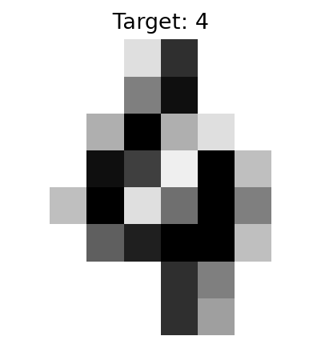
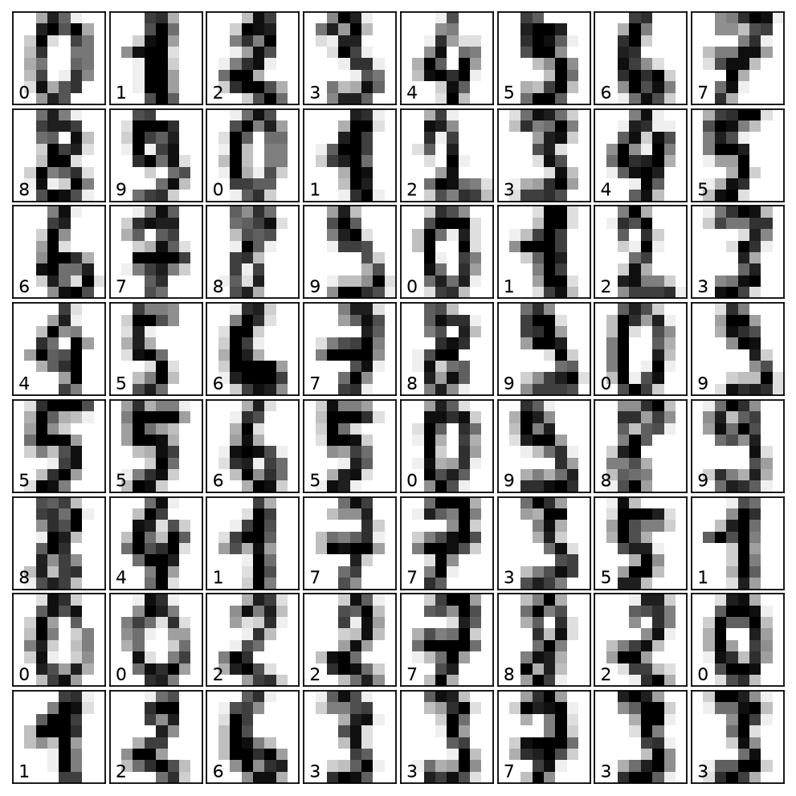
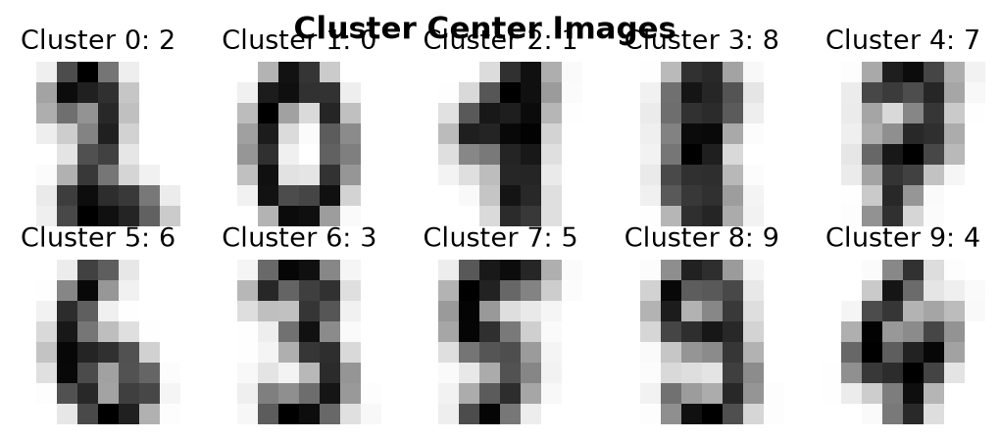

Data shape: (1797, 64). Target shape: (1797,).
.. _digits_dataset: Optical recognition of handwritten digits dataset -------------------------------------------------- **Data Set Characteristics:** :Number of Instances: 1797 :Number of Attributes: 64 :Attribute Information: 8x8 image of integer pixels in the range 0..16. :Missing Attribute Values: None :Creator: E. Alpaydin (alpaydin '@' boun.edu.tr) :Date: July; 1998 This is a copy of the test set of the UCI ML hand-written digits datasets https://archive.ics.uci.edu/ml/datasets/Optical


| Cluster | Interpreted Digit |
|---|---|
| 0 | 2 |
| 1 | 0 |
| 2 | 1 |
| 3 | 8 |
| 4 | 7 |
| 5 | 6 |
| 6 | 3 |
| 7 | 5 |
| 8 | 9 |
| 9 | 4 |

Predicted cluster labels: [4, 7, 7, 2]
Predicted digits: 7551